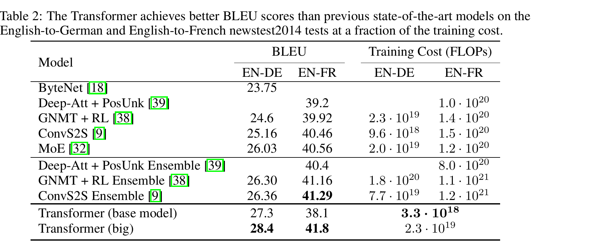

原论文 Table 2(第 8 页):WMT 2014 英德/英法 newstest2014 上的 BLEU 与训练成本(FLOPs)
要点【论文】:big 模型英德 28.4 BLEU,超此前最佳(含集成)2.0+;英法 41.8 BLEU 创单模型纪录,训练成本不足此前 SOTA 的 1/4;base 模型(成本 3.3×10^18 FLOPs)已超越此前所有已发表模型与集成。
注意 论文摘要与 Table 2 记英法 BLEU 为 41.8,而 §6.1 正文写作 41.0——原文两处不一致,此处如实标注。